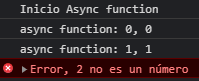

Async Await
Async - Await: espera a que algo se cumpla para poder seguir con el proceso de ejecución.
Las funciones asíncronas pueden trabajar en conjunto con las promesas.
Usando:
function cuadradoPromiseV2(value) {
if (typeof value !== 'number') {
return Promise.reject(`Error, ${value} no es un número`);
}
return new Promise((resolve, reject) => {
setTimeout(() => {
resolve({
value,
result: value * value
});
}, Math.random() * 1000)
})
}
async function funcAsincrona() {
try {
console.log('Inicio Async function');
let obj = await cuadradoPromiseV2(0);
console.log(`async function: ${obj.value}, ${obj.result}`)
obj = await cuadradoPromiseV2(1);
console.log(`async function: ${obj.value}, ${obj.result}`)
obj = await cuadradoPromiseV2('2');
console.log(`async function: ${obj.value}, ${obj.result}`)
obj = await cuadradoPromiseV2(3);
console.log(`async function: ${obj.value}, ${obj.result}`)
} catch (err) {
console.error(err);
}
}
funcAsincrona();
